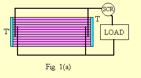
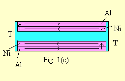

ENERGY SCIENCE ESSAY NO. 17
SOLID-STATE THERMOELECTRIC REFRIGERATION
Copyright © Harold Aspden, 1993
This Essay is essentially the basis of a contribution presented at the 28th Intersociety Energy Conversion Engineering Conference (IECEC) in 1993 in Atlanta.
Solid-State Thermoelectric Refrigeration
Harold Aspden, Thermodynamics Limited, P.O. Box 35, Southampton SO16 7RB, England
and
John Scott Strachan, Optical Metrology Limited, Technology Transfer Centre, Kings Buildings, University of Edinburgh, Scotland.
These addresses are those applicable in 1993 at the time of the conference. Dr. Aspden compiled the paper and gave a verbal account of this work at that conference in Atlanta.
This paper reports progress on the development of a new solid-state refrigeration technique using base metal combinations in a thermopile. Thermoelectric EMFs of 300 microvolts per degree C are obtained from metal combinations such as Al:Ni, assembled in a thermopile of novel structure. By providing for thermally driven Thomson Effect current circulation in loop circuit paths parallel with the temperature gradient between two heat sinks and also for superimposed transverse current flow driven through a very low resistance path by Peltier Effect EMF, an extremely efficient refrigeration process results. With low temperature differentials, one implementation of the device operates at better than 70% of Carnot efficiency. It has the form of a small panel unit which operates in reversible mode, converting ice in a room temperature environment into an electrical power output and, conversely, with electrical input producing ice on one face of the panel while ejecting heat on the other face. An extremely beneficial feature from a design viewpoint is the fact that the transverse excitation is an A.C. excitation, which suits the high current and low voltage features of the thermopile assembled as a stack within the panel.
A prototype demonstration device shows the extremely rapid speed at which ice forms, even when powered by a small electric battery, and, with the battery disconnected and replaced by an electric motor, how the ice thus formed melts to generate power driving the motor.
The subject is one of the two innovative concepts which were the subject of the paper No. 929474 entitled "Electronic Heat Engine" included in volume 4 of the Proceedings of the 1992 27th IECEC.
The technology to be described is seen as providing the needed answer to the CFC gas problem confronting refrigerator designers. From a conversion efficiency viewpoint this device, which uses a solid-state panel containing no electronic components and a separate solid-state control unit which does contain electronic switch and transformer circuitry, outperforms conventional domestic refrigerators. Since it has no moving parts and contains no fluid, its fabrication and operational reliability promise to make this the dominant refrigeration technology of the future.
However, the scientific research and development of the underlying principles have a compelling interest and pose an immediate challenge inasmuch as recent diagnostic testing has pointed to a feature inherent in the prototype implementation that has even greater promise for future energy conversion technology.
This paper will address the subject in two parts. Firstly, the prototype will be described together with its performance data. Then, the ongoing development arising from the new discovery will be outlined.
General Operating Principle
The research was based on the use of a commercially available dielectric sheet substrate which had a surface layer of aluminium bonded to a PVDF polymer film by an intermediate layer of nickel. This gave basis for the idea of applying a temperature differential edge-to-edge to promote thermoelectric current circulation by differences in the Peltier EMFs at the opposite edges of the film.
However, the nature of this material, which was intended for use in a piezoelectric application and so had a metal surface film on both faces, gave scope for crosswise A.C. excitation, as if it was a parallel plate capacitator. Of interest to our research was the question of how the transverse A.C. flow of current through the bimetallic plates would interact with the thermoelectric current circulation.
Our finding was that the underlying D.C. current circulation which tapped into the heat source thermoelectrically was affected to an astounding degree once the A.C. excitation was applied. Whether we used frequencies of 500 kHz or 10 kHz, the thermoelectric Peltier EMF generated by the Al:Ni thermocouple was of the order of 300 microvolts/oC, which was 20 times the value normally expected from D.C. current activation.
It may be noted that, with the thermoelectric aspect in mind, the PVDF substrate film used was made to order, being specially coated with layers of nickel and aluminium to thicknesses of the order of 400 and 200 angstroms, respectively. This was intended to provide a better conductance matching for D.C. current flow in opposite directions in the two metals, it being optimum to design the test so that heat flow from the hot to the cold edges of the film would, by virtue of the Thomson Effect in these respectively electropositive and electronegative metals, suffice to convey equal currents in the two closed path sections without necessarily drawing on the tranversely-directed Peltier EMF action.
It was hoped that the latter would contribute to the A.C. power circuit by a push-pull oscillatory current effect whereby heat energy and A.C. electric energy would become mutually convertible.
A full explanation of the commutating effect obtained by combining matched current flow of the transverse A.C. and the in-film circulating D.C. is given elsewhere (Aspden and Strachan, 1990 and, Aspden, 1992). However, Fig. 1 may suffice to represent schematically the functional operation.

Fig. 1(a) shows how bimetallic capacitor plates separated by dielectric substrates are located between hot (T') and cold (T) panel surfaces with electrical connections at the sides of the panel. Some of the plates are floating electrically, being coupled capacitatively in series, whereas the connections linking an external circuit through an SCR oscillator switch circuit form a parallel-connected capacitor
system.

Fig. 1(b) shows how D.C. current circulates in two bimetallic plates with a matching superimposed transverse A.C. current.

Fig. 1(c) applies when the A.C. current flow is in the upward direction.
The point is that, in alternate half cycles of the A.C., the current flow operates to block the D.C. flow at one or other of the thermocouple junctions whilst segrating the Peltier heating and cooling on their respective sides of the panel.
This has several very interesting consequences.
Firstly, it is found that the Peltier EMF is directed into the A.C. circuit, which being tranverse to the thin metal film, is a low resistance circuit with high but virtually loss-free capacitative impedance.
Secondly, by diverting the electric power generated thermoelectrically, the D.C. current flow in the planes of the metal films was virtually exclusively that of heat-driven charge carriers. The current was sustained by the normal heat conduction loss through the metal and so did not detract from thermoelectric conversion efficiency by drawing upon the generated electric power.
Thirdly, and most unexpectedly, it was found that the current interruption precluded the formation of what we termed 'cold spots' at the Peltier cooled junctions. These latter spots arise in any normal thermocouple owing to concentrations of cold by Peltier cooling in a way which escalates so that the junction crossing temperature of a current is very much lower than that of the external heat sink condition. This stifles the thermoelectric power in the D.C. thermocouple and it was our discovery that the cyclic interruption of the flow by the transverse excitation technique accounts for the transition to the very high 300 microvolts/oC thermoelectric power. The latter has been observed consistently in all three prototypes built to date and in diagnostic test rigs using the Al:Ni metal combination.
Fourthly, however, the eventual testing of operative devices, though performing overall within Carnot efficiency limitations, awakened special interest because there had to be something most unusual about the temperature profile through the device if the best performance measured was to be bounded by the Carnot condition.
Our research is now casting light upon that latter aspect and may herald a major breakthrough in energy conversion technology generally. However, even without the latter, the technology as developed to date does already justify commercial application in refrigeration systems and that is the primary focus of this paper.
Development History
The project has been slow to progress from its inception. One of us, Edinburgh scientist, J. S. Strachan (formerly with Pennwalt Corporation) assembled the device as a small flat module with 500 layers of bimetallic coated PVDF film. It was formed in a 20 by 25 series-parallel connection array which was a design compromise to enhance the capacitor plate area, whilst matching the A.C. excitation voltage and the current rating to the switching circuitry and dielectric properties of the PVDF.
The device performed remarkably well when first tested, without requiring transitional stage-by-stage development to overcome problems. This had the effect of putting in our hands an invention which worked better than we had a right to expect but left us at the outset not knowing precisely how the different elements of the device were really contributing to the overall function.
More important, however, though the thermoelectric operational section of the device was at the heart of the action, the implementation which used the PVDF dielectric and a capacitative circuit posed problems that were seen as formidable but yet were only peripheral to the real invention. There was also some doubt as to whether the properties of the PVDF had a direct role in the energy conversion. There was difficulty in planning in cost terms the onward scaling-up development, owing to the perceived problems of switching high currents at the necessary voltage level and frequency.
Commercial pressures and the limited resources involved in what became a privately sponsored venture to develop the invention, combined with the barrier posed by the switch versus thermoelectric design conflict, halted R & D and led, sadly, to the project falling into a limbo state. This was until interest was aroused by the publication in the latter part of 1992 of the above-referenced 27th IECEC paper (Aspden, 1992) and by the article in Electronics World (Aspden 1992).
Sponsorship interest in the R & D concerning heat-to-electricity power conversion has now revived, led also by a demonstration made possible by the building of a third prototype which incorporates 1,000 PVDF substrate thermocouple capacitor plates and which provides the following test data.
Refrigeration Performance Data
All three prototype devices built to date exhibited a remarkable energy conversion efficiency. They all operated with different switching techniques and different design frequencies.
The first prototype was dual in operation in that it was bonded to a supporting room-temperature heat sink block and the application of ice to its upper face resulted in the generation of electricity sufficient to spin an electric motor. Conversely, the connection of a low voltage battery supply to the device resulted in water on the upper surface freezing very rapidly.
Had this first prototype been assembled the other way up it would have been easy to use calorimeter techniques and measure heat-electricity conversion in both operational modes. As it was, an attempt to chemically unbond the device from the heat sink resulted in corrosion damage which destroyed the device.
The second prototype was built, not for self-standing dual mode operation, but expressly to test the heat to electricity power generation efficiency with variable frequency. It was not self-oscillating and, as it did not function in refrigeration mode, it offered no test of refrigeration efficiency. It gave up to 73% of Carnot conversion efficiency in electric power generation with room temperature differentials of the order of 20oC.
The recently constructed third prototype is superior in its electronic switching design and works well in both electric power generation and refrigeration modes.
There is, however, a circumstance about its operation which means that, for this particular demonstration prototype, according to its intrinsic magnetic polarization state, it works more efficiently in one or other of its conversion functions. This particular third prototype operated with higher Carnot-related efficiency in the electric power generation mode than in the refrigeration mode. Also, for the same reasons, and an additional factor concerning the power drawn by the electronics and impedance matching internal load circuitry, the overall external efficiencies are very much lower than can be expected in a fully engineered product implementation.
The refrigeration performance data presented below is, therefore, a worst-case situation and will, without question, be improved upon in the months following the date when this text is prepared.
The device included an SCR switching circuit which was self-tuning and ran as an oscillator powered from electricity generated from melting ice in power generation mode or drawing on a battery supply in the refrigeration mode. However, the power taken up by this circuitry was factored into the overall performance, meaning that the thermoelectric core of the device had to be functioning at higher efficiency.
Because the electric demands of the circuit were high in relation to the small demonstration thermoelectric core unit to which it was coupled.
The active heat sink area of the device was about 20 sq. cm and a typical test involved a frozen block of 6 ml of water. A test performed after the lower heat sink had settled to a temperature of 25.6oC involved pressing the block of ice in a slightly melting state onto the upper heat sink with a polystyrene foam pad. The output voltage generated was fed to a 3 ohm load. It took 9 minutes for the ice to melt, during which time the measured output was a steady 0.67 V. These data show that a heat throughput of 3.7 watts generates electric power of 0.15 watts with temperatures for which Carnot efficiency is 8.6% This indicates performance overall of 47% of the Carnot value.
It is noted that the 73% value obtained with the second prototype applies to a device which did not incorporate an oscillator demanding power but had simple electronic switching controlled by, and drawing negligible power from, an external function generator.
To test the refrigeration mode, 3 ml of water was poured into a container on the upper surface of the device and a battery supply of 7.2 V fed to the SCR resonator with a limiting resistor now switched into circuit to protect the SCR during its turn-off. This resistor reduced the efficiency further. The circuit drew 6.3 watts and the water froze in 73 seconds. Since convection was minimal the water closest to the surface froze first and this immediately formed an insulating barrier which would mean operation thereafter at a significant subzero temperature at that heat sink during most of those 73 seconds. However, the overall temperature difference ignoring that temperature drop in the ice was 26oC, associated with a cooling power of 13.7 watts for an electric power input of 6.3 watts. This represents a coefficient of performance of 2.17 or 21% of Carnot efficiency. Cooling action at below minus 40oC has been demonstrated.
Based on such worst-case data, which neverthless applies to a simple solid-state device and compares well with the coefficient of performance data of domestic refrigerators, it can be assumed that the technology is capable of meeting production requirements of non-CFC refrigerators and domestic air conditioning equipment.
Outlook following Breakthrough Discovery
Diagnostic test work has proved that the device operation is independent from the piezoelectric or pyroelectric properties of the PVDF substrate used. Given that the action is truly that of the Peltier Effect, there should be current circulation in the bimetallic thin film productive of magnetic polarization. By detecting such polarization as a function of the applied temperature differential one can verify this situation.
It is to be noted that our early research had shown that the thermoelectric EMF could, under certain circumstances, be greatly affected by the application of a magnetic field to the thermocouple junctions. Accordingly, the tests aimed at sensing thermoelectrically-generated magnetic field effects had a particular significance. Furthermore, we had some interest in the Nernst Effect by which a temperature gradient in a metal in the x direction, with a magnetic polarizing field applied in the y direction can develop electric field action in the mutually orthogonal z direction.
It has become, therefore, a subject of research interest to examine how a bimetallic interface subjected to a transverse magnetic field and a temperature gradient in the interface direction affects the circulation of thermoelectric current between the metals.
What we have discovered that is of great importance to the development of the solid-state thermoelectric refrigerator is that the setting up of a temperature gradient in the bimetallic interface plane between two contiguous metal films will produce a magnetizing field which readily saturates the metal if ferromagnetic. Thus the nickel film in the prototypes tested becomes strongly magnetized in one or other direction according to the direction of the temperature gradient.
When this magnetic field is considered in the context of the Nernst Effect it is seen that it can lead to a transversely directed EMF governed by the product of the temperature gradient and the strength of the magnetic polarizing field. This tranversely directed EMF then contributes a bias active in the individual metal and, being in the same transverse direction, supplements or offsets the Peltier EMF in the prototype implementations.
Remembering then that the heating and cooling actions in the operation of the prototype devices are governed by current flow in metal which is, adjacent the respective heat sinks, in line with or opposed to the action of an EMF, one can see how something new has appeared on the technology scene of thermoelectricity. By using heat to generate current circulation, which in turn generates a magnetic field to provide ferromagnetic polarization, a powerful Nernst EMF set up in the metal can act as a catalyst in supplementing the junction Peltier heat transfer action associated with EMF across a metal interface.
This may well be the action which accounts for the very high thermoelectric conversion efficiency we have measured.
In order to quantify this as it may apply to the prototypes we have built, note that a 400 angstrom thickness of well magnetized nickel subjected to a temperature drop of 20oC across a metal length of 2.5 mm, implies a Nernst EMF of the order of 6 mV across the 0.04 micron nickel thickness.
Though small, this is significant alongside the Peltier EMF across a junction, but the really important point is that this Nernst EMF is set up in the metal and not across a metal junction interface. In that metal, owing to the free-electron diamagnetic reaction currents within the nickel and around its boundary, which offset in some measure the atomic spin-polarization of the ferromagnet, there is then scope for some very unusual thermodynamic feedback effects. Those diamagnetic reaction currents which are themselves powered by the thermal energy of the electrons have a strength related to the magnetic polarization and so exceed, by far, the thermoelectric current flowing across junction interfaces. The heating and cooling processes transfer power between the heat sinks in proportion to current times voltage and the in-metal action within the nickel could therefore generate very significant thermal feedback, thereby greatly enhancing the efficiency well beyond that of the normal thermoelectric bimetallic junctions.
This action only results where one of the metals is ferromagnetic and the configuration of the device is such that an applied temperature gradient promotes internal circulation of thermoelectric current around a closed circuit able to develop a magnetic field in the nickel directed transversely with respect to the temperature gradient.
Conclusions
The exciting prospect for future development of refrigeration techniques centres on the possibility that the feedback process can be greatly enhanced by using thicker metal films. It is hoped, therefore, that the research reported here will soon advance to probe the limits of efficiency that are possible with this new solid-state refrigeration technology.
In this connection the truly exciting prospect arises from the possibility that the efficiency barrier set by the Carnot criterion can be penetrated.
To understand this, note that the Peltier EMF on the hot side of a thermocouple is proportional to the higher temperature T' and that at the cooler side is proportional to the lower temperature T. For a given current circulation the heat energy extracted by a refrigeration action is proportional to T and the net input of electrical power is proportional to T'-T.
This is why the coefficient of performance has a Carnot limit of T/(T'-T).
Now, if there is a thermal feedback action that is regulated by a Nernst EMF and we can contrive to assure that the forward transfer of heat arises from a uniform temperature gradient in the ferromagnetic metal, then the Nernst EMF is the same on both sides and the amount of heating on the hot side is, in theory, exactly equal to the amount of cooling on the other side.
There is conservation of energy with negligible net energy input but heat transfer from the cold to hot heat sinks and this implies a very high coefficient of performance not temperature-limited according to the Carnot requirement.
This, therefore, is the challenging possibility that looms in sight and is heralded by the rather fortuitous discovery of the surprisingly high performance characteristics of the Strachan-Aspden base metal thermoelectric power converter.
The Strachan-Aspden device uses what the inventors see as conventional physics, albeit with the innovation of combining transverse A.C. excitation with D.C. thermocouple excitation. However, it does seem that in some curious way the device happens to have features which bring some new physics to bear. By producing a thermally-driven current crossing a strong magnetic field in metal the Lorentz forces on that current develop a transverse reaction EMF in that metal. The combination of that transverse Nernst EMF with a circulating current confined within the metal can, it seems, operate to transfer heat thermodynamically, working through the underlying ferromagnetic induction coupling in the metal. This is somewhat analogous to the way heat energy is somehow diverted into electricity in being routed between the hot and cold heat sinks in a conventional Peltier thermocouple circuit. It does, however, introduce new physics to the technology of refrigeration and offers great promise.
References
Aspden, H.; Strachan, J. S., European Patent Application No. 0369670,1990.
Aspden, H., SAE Technical Paper Series No. 929474 1992.
Aspden, H., Electronics World, July 1992, pp. 540-542.
�
Harold Aspden
haspden@iee.org